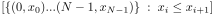
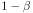

1 Description
[hide]
Repeating measurements is a fundamental technique to analyze and reduce uncertainties in observations. By combining several measurements of the same quantity, random errors tend to cancel out and the observed value can thus be determined with less uncertainty. The image integration task does basically the same thing: combine a set of images of the same subject to improve the signal-to-noise ratio in the resulting image. The ImageIntegration tool allows you to perform this task with a large number of features and resources designed to help you get the best possible result out of your data. These resources include:
- Four pixel combination operations: mean, median, maximum and minimum.
- Multiscale noise evaluation for automatic image weighting and quality assessment.
- Additive and multiplicative image normalization with optional scaling and seven user-selectable robust scale estimators.
- Seven pixel rejection algorithms: min/max, percentile clipping, sigma clipping, Winsorized sigma clipping, averaged (Poisson based) sigma clipping, linear fit clipping and CCD noise model rejection.
- Asymmetric pixel rejection where rejection limits can be defined independently for low and high pixel values.
- Range rejection to exclude too dark and saturated pixels.
- Separate normalization for the pixel rejection and pixel combination processes.
- Pixel rejection maps automatically generated to facilitate evaluation of rejection parameters.
- Slope maps that characterize the magnitude and spatial distribution of brightness variations in the integrated data set.
- Region of interest feature to speed up the process of testing integration and rejection parameters.
- Built-in file cache system for fast retrieval of image statistical data.
- Multithreaded execution with optimized processor scalability.
1.1 Image Combination
In the image integration task we have a set of images of the same region of the sky, which we have previously co-registered (for example, with the StarAlignment tool). Each vector formed with the pixels at the same image coordinates,
is what we call a pixel stack. Since the images are mutually registered, each component of a pixel stack is an observation of the same pixel in the integrated image. Assuming that all components are independent measures of a random variable, we can rewrite a pixel stack as
where we have split each image  into the deterministic signal of interest and an additive noise term . In the above equation, we assume that the noise terms form a set of zero-mean random errors:
into the deterministic signal of interest and an additive noise term . In the above equation, we assume that the noise terms form a set of zero-mean random errors:
The noise materializes the uncertainty of the acquired data, which is inherent in any observational process. The equation above tells us that uncertainty cannot be removed from the data; we can reduce it by combining images, but there is no way to suppress it completely. In the image integration problem, we are representing uncertainty as the random errors in each pixel stack. There are many sources of random errors, such as instrumental limitations, unpredictable fluctuations and reading errors. The data also come altered by processes that are not representable as random variations at the pixel level, such as spurious data (cosmic ray impacts, plane trails), light pollution gradients and the effects of limited seeing. These problems require special procedures to be dealt with, such as pixel rejection and specific post-processing techniques.
The image integration process combines the components of each pixel stack into one pixel of an integrated image. Since our main goal is to improve the signal-to-noise ratio (SNR) in the integrated result, we are interested in knowing the SNR increments that can be achieved with different pixel combination operations. The two operations relevant for this subject in the ImageIntegration tool are the mean (or average) and the median, which we'll discuss below.
-
When the average combination operation is applied, each pixel in the integrated image is calculated as the arithmetic mean of the components of the corresponding pixel stack, which we represent as :
[4]where we symbolize the average-integrated image as . If and are two uncorrelated random variables, a basic property of the variance is
The standard error of the mean can be easily derived from this property. Suppose we have a set of independent and identically distributed (iid) random variables. Since the variables are iid, all of them must have the same variance:
where is the standard deviation of the set. Therefore, the variance of the sum is
and the variance of the mean is given by
Recall that we are working with co-registered images, so the assumption that all the components of any pixel stack are iid random variables looks plausible. Now we can deduce the standard deviation of the average-integrated image from the above equation. Since the operation is performed for all pixel stacks, assuming that all of the input images are normalized to equal variances,
[5]The increase in signal-to-noise ratio is proportional, assuming that all of the input images have equal SNR, to the square root of the number of integrated images:
[6]Note that the mean and the sum of a set of images are strictly equivalent in terms of SNR improvement. This becomes evident from Equation [3]: the sum of zero-mean random errors always tends to zero, and dividing it by a constant does not change anything. The mean is used in most implementations because it prevents saturation of pixels due to accumulated out-of-range values that cannot be represented within the available numeric range.
-
The median of a probability distribution with density function
 is the value
is the value  for which smaller and greater values are equally probable:
for which smaller and greater values are equally probable:The kth order statistic of a statistical sample is defined as its kth smallest sample value. For example, the minimum and maximum of a sample of size N are its 1st and Nth order statistics, respectively. For a distribution sample of odd length the median is the order statistic. For even the median is defined conventionally as the mean of the two central smallest elements at and .
When the median combination operation is selected, the value of each pixel in the integrated image is the median of the components of the corresponding pixel stack:
[7]where we represent the median-integrated image as , and is the floor operator, or the largest integer less than or equal to the argument. From this definition, the easiest—and least efficient—way to compute the median is to sort the list of sample elements and take the value of the central element(s) to compute the median. Much better methods exist, based on quick selection algorithms [8] [9] and hard-coded selection networks [10] [11] [12] for small vector lengths, which we use intensively in our implementations.
To know the SNR improvement that can be expected from a median combination of images, we need to know the standard error of the median and compare it to the standard error of the mean. For a large sample of length N and population median
, the asymptotic variance formula gives the variance of the sample median  :[8]
:[8]where is the distribution's density function. For a standard normal distribution,
[9]Since the standard deviation of the sample mean is , the standard deviation of the sample median is larger by a factor of . From this value we can express the SNR increase for a median combination as
[10]By comparing equations 10 and [6], we see that the SNR achieved by a median combination is approximately a 20% less than the SNR of the average combination of the same images (even less for small sets of images [16]). In terms of SNR improvement, average combination is always better, so what can a median combination be useful for? The answer leads to the subject of robust estimation. For a distribution with a strong central tendency, the median is a robust estimator of the central value. This makes median combination an efficient method for image combination with implicit rejection of outliers, or pixels with too low or too high values due to spurious data. However, in our implementation we provide several pixel rejection algorithms that achieve similar outlier rejection efficiency and can be used with average combination without sacrificing so much signal.
Figure 1 — A Bootstrap Estimation of the Standard Error of the Median
In equations [8] and [9] we have derived an analytical expression for the standard error of the median. To improve your understanding of how standard errors work with real sampled data, we'll show you a method to find the standard error of the median experimentally with the help of a script in PixInsight. In this method we generate a large number of observations from the same distribution, compute their medians and means, and compare the standard deviation of the set of medians with respect to the set of means. If the sample size and the number of observations are large enough, this method can be used to derive a good estimate of the standard error of the median—actually, of the standard error of virtually any statistical estimator with respect to any distribution. This procedure is similar to a bootstrap estimation method, [13] but applied to a known distribution. The following script implements this powerful technique.
/* * Returns a random sample of size n from a standard normal distribution. * * Generates n random normal deviates using the Marsaglia polar method: * http://en.wikipedia.org/wiki/Box%E2%80%93Muller_transform * http://en.wikipedia.org/wiki/Marsaglia_polar_method */ function normalSample( n ) { var g = new Vector( n ); for ( var i = 0; i < n; ++i ) { var s, u, v; // I love SUVs :) do { u = 2*Math.random() - 1; v = 2*Math.random() - 1; s = u*u + v*v; } while ( s >= 1 || s == 0 ); s = Math.sqrt( -2*Math.ln( s )/s ); g.at( i, u*s ); if ( ++i < n ) g.at( i, v*s ); } return g; } /* * Bootstrap estimation */ #define sampleSize 2000 #define numberOfSamples 2000 #define numberOfTests 1000 console.show(); console.writeln( "<end><cbr>Performing bootstrap, please wait..." ); var sigma_a = new Vector( numberOfTests ); var sigma_m = new Vector( numberOfTests ); for ( var j = 0; j < numberOfTests; ++j ) { var a = new Vector( numberOfSamples ); var m = new Vector( numberOfSamples ); for ( var i = 0; i < numberOfSamples; ++i ) { var x = normalSample( sampleSize ); a.at( i, x.mean() ); m.at( i, x.median() ); } sigma_a.at( j, a.stdDev() ); sigma_m.at( j, m.stdDev() ); } var aa = sigma_a.mean(); var ma = sigma_m.mean(); console.writeln( format( "<end><cbr>Stddev of the mean ......... %.6f", aa ) ); console.writeln( format( "Stddev of the median ....... %.6f", ma ) ); console.writeln( format( "Median/mean stddev ratio ... %.3f", ma/aa ) ); /* Result: Stddev of the mean ......... 0.022350 Stddev of the median ....... 0.028001 Median/mean stddev ratio ... 1.253 */
The script generates sets of 2000 samples of 2000 random deviates from a standard normal distribution, stores their median and mean values as two vectors, and computes their standard deviations. After repeating this experiment 1000 times, the script gives an estimate of the ratio between the standard deviations of the median and the mean for a normal distribution. The average ratio tends to stabilize around 1.253 approximately. As expected, this is the same value we found analytically in Equation [9].
You can use this script as a starting point to perform interesting analyses. For example, you can reduce the value of the sampleSize macro to study the variation of the standard error of the median as a function of the sample size. With a little more work, you can transform the script to evaluate the error and efficiency of other estimators for different distributions.
Figure 2 — An Image Integration Experiment
- Original image
- A sample of uniform random noise
- Original image + noise
- Integration of 2 noisy images
- Integration of 4 noisy images
- Integration of 8 noisy images
- Integration of 16 noisy images
- Integration of 32 noisy images
- Integration of 64 noisy images
- Integration of 128 noisy images
- Integration of 256 noisy images
- Integration of 512 noisy images
- Integration of 1024 noisy images
Uniformly distributed random noise was added to 1024 duplicates of the original image, and 10 subsets of the noisy images were averaged following a dyadic sequence. The result can be seen on the comparison above. To carry out this experiment we used the following simple script in PixInsight. To run the script, you have to set the values of the BITMAP_FILE_PATH and OUTPUT_DIR macros to the file path of your original image (the TIFF, PNG, BMP, JPEG, GIF, PPM and XPM formats are supported) and the directory where output files (in PNG format) will be written, respectively.
/* * An Image Integration Experiment */ #include <pjsr/ImageOp.jsh> #include <pjsr/UndoFlag.jsh> // N.B. Change to the actual file path of the test bitmap. #define BITMAP_FILE_PATH "/path/to/original/image.png" // N.B. Change to the actual directory where output files will be written. #define OUTPUT_DIR "/path/to/output/directory" #define NUMBER_OF_IMAGES 1024 var bmp = new Bitmap( BITMAP_FILE_PATH ); var noiseGenerator = new NoiseGenerator; noiseGenerator.amount = 1.00; //noiseGenerator.distribution = NoiseGenerator.prototype.Normal; noiseGenerator.distribution = NoiseGenerator.prototype.Uniform; noiseGenerator.preserveBrightness = NoiseGenerator.prototype.None; var noise = new ImageWindow( bmp.width, bmp.height, 1, 32, true, false ); var sum = new Image( bmp.width, bmp.height ); sum.fill( 0 ); for ( var n0 = 0, n = 1; n <= NUMBER_OF_IMAGES; n0 = n, n *= 2 ) { for ( var i = n0; i < n; ++i ) { noiseGenerator.executeOn( noise.mainView, false/*swapFile*/ ); var noisyImage = new Image( bmp.width, bmp.height ); noisyImage.blend( bmp ); noisyImage.apply( noise.mainView.image, ImageOp_Add ); sum.apply( noisyImage, ImageOp_Add ); noisyImage.free(); } var id = format( "integration_of_%d", n ); var window = new ImageWindow( sum.width, sum.height, 1, 32, true, false, id ); var view = window.mainView; view.beginProcess( UndoFlag_NoSwapFile ); view.image.apply( sum, ImageOp_Mov ); view.image.rescale(); view.endProcess(); window.show(); window.zoomToFit(); view.image.render().save( OUTPUT_DIR + "/" + id + ".png" ); } noise.forceClose();
Figure 3 — How many images?
This graph plots the function
where is the number of integrated images. This function represents the SNR improvement achieved by each new image added to an integration stack. The function decreases as more images are added, approaching zero asymptotically. The improvement remains significant up to about 30 images. Above 30 images, a considerable imaging effort is required to achieve a noticeable SNR increment. Beyond 50 frames, the task becomes impractical for long-exposure deep-sky images.
1.2 Image Weighting
In the preceding section we have described average image combination on a simplified basis, assuming that all of the images contribute equally to the output integrated image. Actually this does not lead, in general, to an optimal combination in terms of SNR improvement. For example, suppose that one of the images being combined has more noise than the rest, or in other terms, its SNR is relatively low. If we simply combine the noisier image, it will degrade the result because the precondition assumed in Equation [2]—that the signal has the same relative strength in all of the images—won't be true. As a result of this precondition violation, part of the noise in the faulty image will be treated as if it were signal, degrading the result.
To maximize SNR in the integrated image we assign a multiplicative weighting factor to each input image. Image weights should account as accurately as possible for the existing SNR differences in the original data set. The weighted average combination is therefore
where is the weight assigned to the image . We have implemented several methods to define image weights in a flexible fashion adapted to different imaging scenarios. The default image weighting method implemented in the ImageIntegration tool is multiscale noise evaluation, which we describe below.
-
In this method we compute robust noise estimates for each input image, and use them to minimize mean square error in the integrated result. This method has proven accurate and efficient, and works in a completely automatic way exclusively from existing image data, without requiring additional information such as exposure times or sensor parameters.
The implemented noise estimation algorithm is based on a multiscale data structure known as multiresolution support (MRS), and has been described in References [1] and [2]. The original algorithm can fail to converge for images with very low noise levels, or images degraded at the one-pixel scale such as RAW DSLR frames demosaiced with bilinear interpolation. For improved robustness and accuracy, we iterate the MRS noise evaluation algorithm to find the highest wavelet layer where the algorithm converges for scales from 1 to 8 pixels. Finally, in the rare cases where MRS noise evaluation does not converge, we fall back to a k-sigma noise estimation scheme, which "cannot fail" to compute a less accurate but still robust and useful noise estimate. The following script summarizes these concepts.
/* * Estimation of the standard deviation of the noise, assuming a Gaussian * noise distribution. * * - Use MRS noise evaluation when the algorithm converges for 4 >= J >= 2 * * - Use k-sigma noise evaluation when either MRS doesn't converge or the * length of the noise pixels set is below a 1% of the image area. * * - Automatically iterate to find the highest layer where noise can be * successfully evaluated, in the [1,3] range. */ function NoiseEvaluation( img ) { var a, n = 4, m = 0.01*img.selectedRect.area; for ( ;; ) { a = img.noiseMRS( n ); if ( a[1] >= m ) break; if ( --n == 1 ) { console.writeln( "<end><cbr>** Warning: No convergence in MRS noise evaluation routine" + " - using k-sigma noise estimate." ); a = img.noiseKSigma(); break; } } this.sigma = a[0]; // estimated stddev of Gaussian noise this.count = a[1]; // number of pixels in the noise pixels set this.layers = n; // number of layers used for noise evaluation } function main() { // Get access to the current active image window. var window = ImageWindow.activeWindow; if ( window.isNull ) throw new Error( "No active image" ); console.show(); console.writeln( "<end><cbr><br><b>" + window.currentView.fullId + "</b>" ); console.writeln( "Calculating noise standard deviation..." ); console.flush(); console.abortEnabled = true; // Compute noise estimates for the active view. var img = window.currentView.image; for ( var c = 0; c < img.numberOfChannels; ++c ) { console.writeln( "<end><cbr><br>* Channel #", c ); console.flush(); img.selectedChannel = c; var E = new NoiseEvaluation( img ); console.writeln( format( "sigma%c = %.3e, N = %u (%.2f%%), J = %d", img.isColor ? "RGB"[c] : 'K', E.sigma, E.count, 100*E.count/img.selectedRect.area, E.layers ) ); console.flush(); } } main();
For a given function and a set of measured function values , define mean square error as
where is the expected value of the argument. We define the signal-to-noise ratio function (SNR) as the ratio of the mean square sample value to the mean square error:
[12]Our goal in the noise evaluation weighting method is to minimize mean square error in the integrated image or, equivalently, maximize its signal-to-noise ratio. SNR, as defined by the above equation, suggests itself as an image weighting function: the mean square error can be approximated by the variance of the noise computed with the MRS algorithm, and calculating the mean square sample value is relatively trivial. Unfortunately, the SNR function has two main problems:
- As a signal estimator, the numerator of the SNR equation (mean square sample) is not robust. In fact, its breakdown point is zero, which makes it extremely unstable. Attempts to use trimmed and Winsorized versions of the mean square fail in this case because the estimator becomes insufficient, and sufficiency is a crucial property here. To properly implement SNR as a weighting function, image weights should be computed after pixel rejection, which involves additional storage space requirements, being the number of integrated images and the number of pixels. Even after rejection and mormalization, the mean square sample is too sensitive to outliers, which degrades its accuracy as a signal estimator.
- As a result of its lack of robustness, the SNR function is even more inaccurate in presence of sky gradients, which further limits its applicability.
To overcome these problems we use a different, closely related but robust image weighting functional:
[13]where is the standard deviation of the noise in the input image
, given by the MRS algorithm, and is the scaling factor for , given by Equation [34].The above weighting function is robust and efficient, and works well even when the images include relatively strong gradients. Equation 13 defines the weighting factor that enters Equation [11] for weighted average combination. Our tests have shown that the efficiency of this weighting scheme is similar to the SNR function in terms of SNR maximization (inferior by only a 1% - 3%, depending on the quality of the data). The reliability and robustness of our weighting function more than compensate for a slightly worse performance.
1.3 Pixel Rejection
At the beginning of this document, we have said that the set of integrated images usually contains spurious data that cannot be characterized as random noise. Here we are interested in accidental phenomena such as plane or satellite trails and cosmic ray impacts on CCD and CMOS sensors, and also in instrumental defects such as hot or cold pixels and bad pixel rows and columns (with the necessary help of some dithering between subexposures!). All of these bad data form bright or dark artifacts at relatively small dimensional scales, which can be removed efficiently during the image integration task thanks to a family of statistical methods collectively known as pixel rejection algorithms.
The goal of a pixel rejection algorithm is to exclude outliers from the set of pixels that are to be combined in each pixel stack. The differences between the rejection algorithms available lay basically in their sophistication and suitability to detect true outliers in small and large sets of images. In the following paragraphs we describe the rejection algorithms currently implemented in our ImageIntegration tool.
-
Min/Max Clipping
-
The simplest rejection algorithm is known as min/max. It simply excludes the smallest and the largest pixels from every pixel stack. While this is an efficient method for rejection of outliers—indeed it cannot fail to reject them—, it is quite poor in terms of signal preservation. For an average combination, min/max rejection leads to a constant SNR loss proportional to the square root of the number of clipped pixels. For example, if you set , then the result of min/max in SNR terms is the same as if you removed two images from your data set and used a better rejection algorithm such as sigma clipping.
Min/max clipping can be used as a counter-test to verify the efficiency of fine tuned rejection parameters for more efficient rejection algorithms. Other than these control tasks and some special cases, min/max should be avoided in production work.
-
Percentile clipping is a one-step rejection algorithm where a pixel is excluded from a pixel stack if it falls outside a range defined in terms of the stack's central value. The algorithm can be formalized as
[14]and the rejection function
[15]where is the pixel value,
is the median of the pixel stack, and and are the low and high clipping point parameters, respectively, in the [0,1] range. Percentile clipping is a good choice only for small sets, say up to 6 images maximum. With just a few images, more sophisticated algorithms tend to fail because they are based on statistical moments higher than the mean (e.g., the standard deviation), which have little significance for very small samples. -
Sigma clipping is an iterative rejection algorithm. At each iteration, the central value and dispersion (or sigma) of the pixel stack are estimated, and all pixels whose distances from the central value are larger than a prescribed value in sigma units are rejected:
[16]where is defined as
[17]and
and are the pixel value, the median and the standard deviation of the current stack, respectively. and are the clipping point parameters expressed in sigma units. The sigma clipping algorithm requires a minimum of 8 or 10 images. The more images the better, but for larger sets Winsorized sigma clipping and linear fit clipping tend to be more efficient.Figure 4 — Sigma Clipping Rejection

The elements of a pixel stack have been sorted in ascending order and represented as circles on this graph. The red line labeled as m represents the median of the pixel stack. The two red lines above and below the median are the clipping points, and respectively in sigma units. All pixels falling outside the interval between the clipping points—represented as empty circles in the figure—will be rejected. However, are all of these rejected pixels true outliers? Compare with linear fit clipping rejection in Figure [5].
-
Winsorization,[3] named after statistician Charles P. Winsor, is a process for robust estimation of sample parameters in presence of outliers. When a sample value falls outside the acceptable range, Winsorization does not simply reject it, but replaces it by the nearest valid neighbor in the sample. Winsorized estimates are usually more robust than estimates from simpler procedures such as trimming or truncation. To understand the Winsorization process, consider the following sorted set of 15 values:
9, 13, 15, 15, 17, 18, 18, 19, 21, 23, 24, 24, 25, 31, 33 ,
where we can identify three outliers: 9 is suspiciously low, and 31 and 33 are clearly too high. Based on this intuition-driven rejection criterion, the Winsorized sample would be:
13, 13, 15, 15, 17, 18, 18, 19, 21, 23, 24, 24, 25, 25, 25 ,
where the outliers have been replaced by their nearest valid neighbor values.
As implemented in our ImageIntegration tool, the Winsorized sigma clipping algorithm applies Winsorization to compute robust estimates of the central value and variability of each pixel stack. These estimates are called Winsorized mean and Winsorized sigma, respectively. The basic process has been described by Huber.[4] The implemented algorithm can be formalized as
[18]where the constant sets the iteration limit for Huber's loop ( = 0.0005 has been fixed in our implementation), the constant 1.134 is derived from the normal distribution for a sigma factor of 1.5 (as recommended in Huber's work), and the Winsorization function is defined as follows:
[19]Winsorized sigma clipping is an excellent pixel rejection algorithm for relatively large sets of 15 or more images. For more than 20 images, this algorithm yields significantly better results than sigma clipping consistently in all of our tests.
-
Our implementation of averaged sigma clipping is a variant of the similar algorithm (AVSIGCLIP) from the imcombine task of IRAF. This algorithm works in two phases. In the first phase, the gain of an ideal detector with zero readout noise is estimated for each pixel stack. The second phase is an iterative sigma clipping procedure, where the estimated gains are used to compute the dispersion of each pixel stack around the median. Dispersion is calculated based on Poisson statistics, under the assumption that the noise in the images is proportional to the square root of the mean pixel values:
 [20]
[20]As we have implemented it, this algorithm works well for image sets of 10 or more images. The original implementation in IRAF works for smaller data sets because the proportionality between photons and pixel values, or the estimated sensor gain (the
 variable in the algorithm above) is calculated for each row of pixels. In our implementation the sensor gain is estimated separately for each pixel stack, in order to avoid visible differences between adjacent rows in the output image.
variable in the algorithm above) is calculated for each row of pixels. In our implementation the sensor gain is estimated separately for each pixel stack, in order to avoid visible differences between adjacent rows in the output image. -
The linear fit clipping algorithm fits the best possible straight line to the set of pixel values in each pixel stack. Line fitting is performed with a twofold optimization criterion: minimize average absolute deviation and maximize inliers. All pixels whose vertical distances to the fitted line are larger than a user-defined value in absolute deviation units are rejected. This algorithm has been created by PTeam member and principal PixInsight developer Juan Conejero:
[21]The FitLine function finds the two parameters of the line that minimizes average absolute deviation for an ordered set of points . In our implementation we have adapted a robust estimation algorithm from W. Press et al.,[5] but other robust methods are equally applicable, such as a least squares fit based on eigenvector evaluation.[6] The LineClipping function is defined as
[22]Linear fit clipping is excellent for large sets of 25 or more images. The algorithm is robust both to outliers and to illumination differences among images of the integrated set, as happens in presence of sky gradients with differing spatial distributions and orientations. A byproduct of linear fit clipping is the slope of the fitted line for each pixel stack (the variable in the above algorithms), which provides accurate estimates of the illumination differences among the images integrated for each pixel. In the ImageIntegration tool we generate slope map images that gather this information.
Figure 5 — Linear Fit Clipping Rejection
Linear fit clipping working for the same sorted set of data samples shown in Figure [4] for sigma clipping rejection. As before, empty circles represent rejected pixels. The algorithm adapts much better to variations caused by gradients with differing orientations and distributions throughout the set of integrated images. In this example, robust line fitting allows working with a more restrictive clipping interval to reject true outliers while preserving more significant data.
-
We implement the same CCDCLIP algorithm of the imcombine task of IRAF. To apply this pixel rejection algorithm one has to know the precise gain and readout noise parameters of the CCD sensor used to acquire the images. In addition, the images must preserve the original relation between pixel values and photons or electrons. The noise model is [7]
[23]where is the pixel value in DN (DN stands for data number, or the value of a pixel stored in the raw CCD image), is the readout noise in DN, is the gain in DN/photon, and is the scale noise, also known as sensitivity noise, a dimensionless factor representing multiplicative noise, e.g. noise introduced by flat fielding. Usually the scale noise is unknown and hence set to zero. The constant term in represents additive noise, and the term proportional to the square root of the intensity value corresponds to Poisson noise.
The algorithm is just a sigma clipping scheme where the CCD noise model is used to estimate the variability of the values in each pixel stack around the median:
[24]
1.4 Image Normalization
The normalization process modifies the distribution of pixel values of each input image to make the whole data set statistically compatible. When a set of two or more images are normalized, statistical moments such as the mean and the variance are quantitatively comparable between any pair of images from the set. Put in simpler terms, normalization allows us to compare the histograms of all of the images, ruling out differences in signal strength and mean background values. Normalization is an absolutely necessary previous step to pixel rejection. If the images are not normalized, any pixel rejection scheme will yield meaningless results because it will work by comparing incongruent data samples (e.g., pixels from the background on an image could be compared with pixels from significant objects on another image). In the ImageIntegration tool we have implemented two separate and independent image normalization procedures for pixel rejection and image combination, as both tasks have different requirements in their statistical interpretation of the data.
Figure 6 — Image Normalization Example
a
b
c
d
e
f
Two raw CCD images of the Cone nebula region, a and c, and their histograms b and d, respectively. Both original images are linear; they are represented here stretched nonlinearly to make them visible. For the same reason, the histograms have been enlarged 64:1 horizontally, so they cover a small initial section of 1/64 of the available numeric range. These images are not compatible statistically, as becomes evident by simply comparing the histograms: the positions and widths of both histogram peaks are very different. For example, mean background pixel values in the first image have values that are typical of bright nebulae in the second image. In e and f we have the second image (c) and its resulting histogram, respectively, after normalizing it to match the first image (a) by applying equations [33] and [34]. Images courtesy of Oriol Lehmkuhl and Ivette Rodríguez.
1.4.1 Scale and Location Estimators
Statistical estimates of location (or central tendency) and scale (dispersion, or variability) play an essential role in the image integration task. For example, comparisons of unscaled noise estimates from different images are meaningless. Consider the two linear images, their histograms and noise estimates, shown in Figure [7].
From the MRS Gaussian noise estimates,[1] the bottom image seems to be about three times less noisy than the top image, so it should be weighted much more than the top image for integration (about 11 times more in a mean square error minimization scheme). Doesn't this seem to be contradictory to the visual appearance of both images? In fact, the bottom image is just a duplicate of the top image, multiplied by 0.3. So both images have exactly the same signal and noise components, because other than the applied scaling operation, they are identical.
Figure 7 — Different Scales, Different Images?
Two registered images of the same region of the sky, shown with adaptive nonlinear stretch functions applied (STF AutoStretch functions in PixInsight). Each image is accompanied by its histogram and MRS Gaussian noise estimate. The different image scales (in the statistical sense, not geometrical) are self-evident from the histogram, although not visually because of the applied adaptive stretch functions.
When integrating real images, similar situations to the one described above happen naturally due to different exposure times, sky conditions, sensor temperatures, and other acquisition factors. To compare noise estimates between different images, one has to take into account not only the noise values, but also the scaling factors that must be applied to make the noise estimates statistically compatible. Besides noise estimation (and its associated image weighting criterion), pixel rejection also depends critically on estimators of location and scale. For example, with the images shown above, a pixel pertaining to the sky background in the top image would be ranked the same as a pixel on a relatively bright area in the bottom image, probably pertaining to a moderately bright star (compare the histograms to understand why this would happen).
With the sole exception of the IKSS estimator, which we'll see below, the median is used as an estimator of location in the current versions of the ImageIntegration tool. The median is a robust estimator of location that works remarkably well for linear images because the typical distribution of linear pixel values has a very strong central tendency. In other words, the main histogram peak of a linear image is clearly unique and prominent. The choice of a scale estimator is more difficult, and can have an impact on the optimization of the whole image integration process. In its current versions, ImageIntegration implements seven estimators of scale that we'll describe summarily below.
-
The average absolute deviation from the median has been the default scale estimator used in versions of the ImageIntegration tool released before mid-2013. For a sample
 ,[25]
,[25]where is the sample median. As implemented in the ImageIntegration tool, the average absolute deviation is robustified by trimming all pixel samples outside the [0.00002,0.99998] range, which excludes cold and hot pixels, as well as most saturated pixels and bright spurious features (cosmics, etc). Yet this is a nonrobust estimator—its finite sample breakdown point is zero—, so its use has to be questioned. The average absolute deviation has two important advantages though: its efficiency is very high (88% for a normal distribution), and it is also a rather sufficient estimator. Sufficiency of a statistical estimator refers to its ability to use all of the available sampled data to estimate its corresponding parameter. This explains why the average absolute deviation still works very well in some cases, and why it has been working reasonably well in general, until we have implemented the current set of robust scale estimators.
-
The MAD estimator is the median of the set of absolute differences between the sample values and the sample median:
[26]MAD is a very robust estimator of scale. It has the best possible breakdown point (50%), but its efficiency for a normal distribution is rather low (37%). MAD tends to work better for images with large background areas. Note that the word "background" here is being used with a purely statistical meaning; it can be the sky but also a dominant background nebula, for example. For more "busy" images, MAD tends to work worse because of its poor sufficiency.
-
The square root of the biweight midvariance [14] is a robust estimator of scale with a 50% breakdown point (the best one possible) and high efficiency with respect to several distributions (about 86%). The biweight midvariance is calculated as follows. For each sample value let
[27]and let the indicator function be defined as
for . The biweight midvariance is then given by
[28]whose square root is a robust and efficient estimator of scale. For a detailed explanation of the reasons to use the constant 9 in equation [27], see Wilcox (2012). [14]
-
The square root of the percentage bend midvariance [14] is another robust estimator of scale. The percentage bend midvariance is interesting because it allows varying its efficiency and resistance properties, like a sort of programmable scale estimator in terms of efficiency/sufficiency versus robustness. Let
Define the set
 of absolute differences from the sample median, and sort it in ascending order, so that we have . Define
of absolute differences from the sample median, and sort it in ascending order, so that we have . Definewhere the denominator is an estimate of the  quantile of the distribution of Now the percentage bend midvariance is given by
[29]where is the same indicator function defined above for the biweight midvariance, and
The parameter can be used to change the tradeoff between robustness and efficiency. The lower the value of the higher the efficiency, at the cost of a lower resistance. For the image integration task we have fixed , as recommended by Wilcox (2012) for a general purpose estimator. [14] With this value we have a Gaussian efficiency of about a 67% and a breakdown point of 0.2.
-
The average deviation, MAD, biweight and bend midvariance estimators measure the variability of pixel sample values around the median. This makes sense for deep-sky images because the median closely represents the mean background of the image in most cases. However, these estimators work under the assumption that variations are symmetric with respect to the central value, which may not be quite true in many cases. The Sn and Qn scale estimators of Rousseeuw and Croux [15] don't measure dispersion around a central value. They evaluate dispersion based on differences between pairs of data points, which makes them robust to asymmetric and skewed distributions. Sn and Qn are as robust to outliers as MAD, but their Gaussian efficiencies are higher (58% and 87%, respectively). The drawback of these estimators is that they are computationally expensive, especially the Qn estimator.
The Sn estimator is defined as
[30]where and are the order statistics of rank and , respectively.
The Qn estimator can be defined as
[31]where , and the expression represents the quantile of the set . In other words, Qn is an estimate of the order statistic of the set of interpoint distances.
We must point out that the Sn and Qn estimators don't depend on any location estimate, as is the case for the rest of scale estimators (which use the sample median as an estimator of central tendency). Since Sn and Qn compute differences between data samples, they can provide more reliable results for skewed and asymmetric distributions.
By simple inspection of these algorithms it is clear that the complexity of a naive implementation is . Fortunately, alternative implementations exist with complexity. These variants, which we have adapted to the PixInsight/PCL platform, have been designed and implemented by the authors of the original algorithms. [15]
-
Given a data vector with values in the [0,1] range, the IKSS algorithm can be formalized as follows:
[32]The IKSS algorithm computes estimates of location and scale (the first and second elements, respectively, of the returned sets in the above algorithm) by evaluation of the biweight midvariance in an iterative k-sigma clipping scheme. The parameter is the fractional accuracy of the desired scale estimate. In our implementation we set , which normally requires from 4 to 10 iterations, depending on the distribution of pixel values of the image. The parameter is a safeguard to guarantee numerical stability in degenerate cases; usually we set it to twice the machine epsilon for IEEE 754 32-bit floating point:
 . Finally, the 0.991 constant makes the IKSS estimator consistent with the standard deviation of a normal distribution.
. Finally, the 0.991 constant makes the IKSS estimator consistent with the standard deviation of a normal distribution.The IKSS estimator has a breakdown point of 0.5 and its Gaussian efficiency is 92%. Its resistance to outliers is much better than any of the rest of implemented estimators. In simulations with real images contaminated with synthetic impulsional noise of varying amplitudes, IKSS can tolerate in excess of a 50% of outliers without significant variations in the computed estimates. IKSS yields at least reasonably good results with the vast majority of deep-sky images, and therefore it is the default estimator of scale in the current versions of the ImageIntegration tool. When the IKSS estimator is selected, the IKSS estimate of location is also used instead of the median for all image normalization tasks.
1.4.2 Rejection Normalization
Rejection normalization is applied to each input image just before the pixel rejection task. If the rejection and output normalization methods differ, the image generated in equations [33] and [35] is a temporary data structure used exclusively to decide which pixels are to be rejected as outliers; in such case it is disposed once the pixel rejection task has been completed.
-
This normalization method matches mean background values and dispersion for all of the input images before pixel rejection. This is the default rejection normalization, which should always be applied to integrate calibrated raw images with reasonably flat illumination profiles. The scaling + zero offset normalization algorithm can be expressed as
[33]where is the working normalized image, and are, respectively, the scaling factor and the location estimate for the input image, and is the location estimate for the reference image. Conventionally, the first image in the input set, namely , is taken as the reference image for normalization and image weighting tasks.
The median of all pixels in an image is always used as the estimator of location, except when the IKSS scale estimator is used, in which case is the IKSS location estimate.
Scaling factors are computed by the expression
[34]where and are, respectively, the scale estimates for the reference and the input images.
-
This method simply matches the main histogram peaks of all images prior to pixel rejection. This is done by multiplication with the ratio of the reference location estimate to the location estimate of each integrated image:
[35]This is the method of choice for rejection with sky flat field frames, since in this case trying to match dispersion does not make sense because of the irregular illumination distribution. For the same reason, this method of rejection normalization can also be useful to integrate uncalibrated images, or images suffering from strong gradients due to vignetting or light pollution.
1.4.3 Output Normalization
Output normalization is applied to all input images just before the image combination task, only to those pixels that have survived after the rejection task.
-
This normalization method matches mean background values among all images prior to the pixel combination task. The algorithm can be represented as
[36]where
 symbolizes one of the images that will feed the image combination task, and represents the corresponding input image.
symbolizes one of the images that will feed the image combination task, and represents the corresponding input image. -
This method also matches backgrounds, but instead of additive operations, it applies a normalization by division:
 [37]
[37]Additive and multiplicative normalizations lead to similar results in general. However, multiplicative normalization should be used to integrate images that are to be further combined or applied by multiplication or division. This is especially important for integration of flat frames, since a master flat frame should not contain any additive terms.
-
Scaling matches dispersion among the images. This can be seen as a sort of automatic weighting correction to integrate images with differing overall illumination. The equations are
[38]and
[39]respectively for additive and multiplicative normalization with scaling, where is the scaling factor given by Equation [34]. Scaled output normalization is the recommended option for integration of light frames. In general, scaled normalization will lead to higher signal-to-noise ratios in the integrated result.
1.4.4 Recommended Normalization Methods
The following table summarizes the recommended normalization methods for master calibration and light frames. The recommendations for light frames are generally valid in most cases. If there are very strong sky gradients or similar illumination variations, and their intensities vary considerably among the images being integrated, simple flux equalization may be a better option for rejection normalization.
1.5 Quality Assessment
When the evaluate noise option is selected, ImageIntegration performs a (scaled) noise evaluation task on the final integrated image, and compares the computed noise estimates with the original integrated frames in order to assess the quality of the integration. Without this final assessment, image integration is kind of a "faith-based" process, where one has no way to know if the achieved image is making justice to the data with the available resources. This is contrary to the general philosophy of PixInsight. Bear in mind that the result of integration is the very starting point of your image, so knowing how good is it is of crucial importance.
Previous versions of ImageIntegration (prior to versions released since mid-2013) attempted to provide estimates of the signal-to-noise ratio (SNR) improvement. We have seen that when we average N images, we can expect an SNR improvement equal to the square root of N (Equation [6]). This is a theoretical upper limit, which we'll never achieve due to a number of adverse factors (we work with discrete signals, we reject some pixels, not all of the images have the same quality, etc). Unfortunately, estimating the relative SNR gain is not a trivial problem, and the routines implemented in previous versions of the ImageIntegration tool were not as accurate as desirable. In some cases we have seen reported improvements slightly greater than the theoretical limit, which doesn't contribute to the confidence on these reports. We definitely need more accuracy.
In the latest versions of ImageIntegration we no longer attempt to evaluate SNR increments. Instead, we provide accurate estimates of the effective noise reduction function (ENR):
where and are the reference and integrated images, respectively, terms are noise estimates, and the scaling factor is given by
where and are scale estimates for the reference and integrated images, respectively. As is customary in our implementation, we use the multiresolution support noise evaluation algorithm [1] and the IKSS estimator of scale, respectively for and estimates.
To understand how effective noise reduction works in practice, consider the images shown in Figure [8].
Figure 8 — SNR Improvement Example
A crop of a single reference frame (left) and of the result of the integration of 20 frames (right). Both linear images are being shown with adaptive screen stretch functions computed for the whole images (not for the crops shown).
The image to the left is a crop of the reference frame of an integration set of 20 images. The right hand image is the same crop on the integrated result. Both linear images (the whole images, not the crops) are being shown with automatic screen stretch functions applied (STF AutoStretch). We know that we can expect a maximum SNR increment of 4.47 approximately (the square root of 20). The achieved improvement is self-evident by comparing the images: the integrated result is much smoother than the original, and the higher SNR is also evident from many features that are clearly visible after integration, but barely detectable or invisible on the original.
This is a purely qualitative evaluation. Let's go a step forward in our analysis, and apply automatic screen stretch functions just to the cropped images—not to the whole images as before. As you know, the STF AutoStretch function is adaptive in the sense that it computes histogram transformation parameters based on statistical properties of the image. The result can be seen on Figure [9].
Figure 9 — Effective Noise Reduction

a
b
The same images shown in Figure [8], but with adaptive screen stretch functions computed for the crops, instead of for the whole images.
Clearly not as 'nice' as before. The integrated image still shows many dim stars that are barely visible on the original, but the background noise levels are now quite similar: the illusion of a smooth result has evanesced. To explain why this happens we need some quantitative analysis. If we compute robust estimates of dispersion and noise for these cropped images, we get the following values:
|
Image |
IKSS scale estimate |
MRS noise estimate |
|---|---|---|
Reference frame (Figure 9.a) |
||
Integrated frame (Figure 9.b) |
The first thing to note is that the standard deviations of the noise are quite similar to their corresponding scale estimates for each image (more similar in the original crop). This happens because these crops are dominated by the background of the image, where the noise also dominates over the signal. Now let's scale the integrated noise estimate with respect to the original. Applying Equation [41], the scaling factor of the integrated crop with respect to the original crop is
Applying Equation [40], we have:
This represents only about a 14% noise reduction, which intuitively is in good agreement with the differences shown in Figure [9]. ImageIntegration has reported an effective noise reduction factor of 1.298 for the whole image in this case (integration of 20 images). Now you know why the noise in background areas is so difficult to remove, even after stacking a good bunch of images: as soon as you stretch the image, the noise comes back on low SNR areas. Now you know also why robust and accurate estimators of noise and scale are so important.
This is how the latest versions of ImageIntegration evaluate the quality of an integration process. Effective noise reduction evaluation is much more accurate and robust than the SNR increments reported by previous versions. Don't let the low figures discourage you: they don't represent the SNR improvement that your are achieving with your data, but the noise reduction achieved on low-signal regions, where noise estimates are very accurate and reliable as quality estimators. Your goal when integrating a set of light frames is to achieve the maximum possible noise reduction with the necessary rejection of outlier pixels.
2 Usage
[hide]
2.1 Input Images
Use these controls to define and manage a list of image files to be integrated. For best performance and optimal resource usage, you should always work, as far as possible, with file formats able to perform incremental reading operations. Incremental reading consists of loading images by successive strips of pixel rows. As of writing this documentation, only the FITS format supports this functionality.
An important task that should always be carried out before image registration and integration is analysis and evaluation of the quality of the data. We strongly recommend you use the SubframeSelector script to perform all image grading and selection tasks with calibrated images as a batch process. This script allows you to qualify your images based on a variety of criteria, including noise estimates, FWHM and star eccentricity, among others, and arithmetic combinations of them. The Blink tool is also invaluable for visual inspection and statistical analysis of sets of images.
-
The largest control in this section is a list box with all the images currently selected for integration. The list will show full file paths or just file names, depending on the state of the Full Paths checkbox. You must select at least three files. On this list you can:
- Double-click an item's file name or path to open it in PixInsight as a new image window.
- Double-click a green checkmark icon to disable an item (double-click the red crossmark icon to enable it). Disabled files will not be integrated.
- Mouse over an item to see its full file path as a tool tip window.
-
Add Files
-
Click this button to open a file dialog where you can select new image files that will be appended to the current list of files to be integrated. Only files located in the local filesystem can be selected; the tool does not currently support remote files located on network devices. As noted at the beginning of this section, only file formats with incremental reading capabilities should be selected (e.g., FITS) for performance reasons, although the tool supports any installed file format.
-
Set Reference
-
The ImageIntegration tool uses a reference image. By convention, the first (enabled) file in the input list is the reference image. The reference image is used for:
- Image normalization. All input images will be normalized (both pixel rejection normalization and output normalization) to be compatible with the statistical properties of the reference image.
- Image weighting. All image weights will be computed relative to the reference image, which will be assigned unit weight by convention.
- Quality assessment. When the corresponding option is selected, effective noise reduction (ENR) estimates are computed relative to all integrated images, and the ENR estimate relative to the reference image, as well as the median ENR estimate, are provided.
For optimum performance of the image weighting and pixel rejection tasks, the reference image should be chosen as one of the best frames in the integration set. As for image weighting, the choice of a reference image is theoretically irrelevant under ideal conditions, but given that we normally have to work under much-less-than-ideal conditions, these points can help you to select an optimal integration reference image:
- If there are varying gradients in the data set, select the image with the least/weakest gradients. Gradients complicate calculation of fundamental statistical properties such as scale and location.
- Try to select the best image in terms of SNR. In general, this corresponds to the image with the least noise estimate.
- Avoid selecting a reference image with strong artifacts, such as plane and satellite trails, etc.
As noted at the beginning of this section, we recommend the SubframeSelector script and the Blink tool for all image grading tasks.
-
Select All
-
Click this button to select all the files in the current list of input images.
-
Invert Selection
-
Click this button to invert the current selection in the list of input images.
-
Toggle Selected
-
Click this button to enable/disable the files currently selected in the list of input images.
-
Remove Selected
-
This button removes the selected files from the list of input images. This action cannot be undone.
-
Clear
-
Click to empty the list of input images. This action cannot be undone.
-
When this option is selected, the list of input files will show the full absolute file paths of all selected images. When this option is disabled (default state), only file names will be shown, which simplifies visual inspection, and full file paths are shown as tool tip messages.
2.2 Format Hints
Format hints are small text strings that allow you to override global file format settings for image files used by specific processes. In the ImageIntegration tool, input hints change the way input images of some particular file formats are loaded during the integration process. There are no output hints in ImageIntegration, since this process does not write images to disk files.
Most standard file format modules support hints; each format supports a number of input and/or output hints that you can use for different purposes with tools that give you access to format hints. In the following tables we give you complete information on the input hints supported by the most important standard file formats in PixInsight.
If multiple input hints are specified, they must be separated by spaces.
2.3 Image Integration
This section allows you to control the image combination task.
-
Combination
-
This list box allows you to select the image combination operation:
- Average. The output integrated image is the pixel-by-pixel mean of all input images. Provides the highest signal-to-noise ratio in the integrated result.
- Median. The output integrated image is the pixel-by-pixel median of all input images. Provides robust implicit rejection of outliers, but at the cost of about a 20% signal loss.
- Minimum. Each pixel of the output integrated image is the minimum value of the corresponding pixels from all input images. This mode is only useful for special purposes; it should not be used for normal image stacking operations.
- Maximum. Each pixel of the output integrated image is the maximum value of the corresponding pixels from all input images. This mode is only useful for special purposes; it should not be used for normal image stacking operations.
-
Normalization
-
Selects the output normalization method used for the image combination task:
- No normalization. If this option is selected, the images won't be normalized prior to combination. This is useful when there are pedestals in the input images that must be preserved, as happens when integrating master bias and master dark frames.[17] Normally this option should not be selected for integration of flat and light frames.
- Additive. Additive operations will be applied to match mean background values.
- Multiplicative. Mean background values will be matched by division. This option must be used to integrate master flat frames. It can also be used to generate images that are to be further combined by multiplication or division.
- Additive + scaling. Along with additive background matching, the images will be scaled to match dispersion. This is the default option, which should normally be used to integrate light frames.
- Multiplicative + scaling. Along with background matching by division, the images will be scaled to match dispersion. This option can be used to generate images that are to be further combined by multiplication or division.
-
Weights
-
Selects an image weighting method:
- Don't care. If this option is selected, no weighting will be applied and all input images will be combined directly. This mode should be selected to integrate master bias, dark and flat frames. For science frames, weighting should always be enabled.
- Exposure time. Will weight the input images by their relative exposures. Exposure times will be retrieved from standard EXPTIME and EXPOSURE FITS keywords (in that order).
- Noise evaluation. Uses multiscale noise evaluation techniques [1] [2] to optimize the integration for mean square error minimization. This is the most accurate and robust image weighting algorithm currently available in the ImageIntegration tool, and is therefore the default option.
- Average signal strength. Estimates relative exposures from statistical properties of the images. This method will not work at all if some images have additive illumination variations, such as sky gradients.
- Median value. Weights the input images by their median pixel sample values, relative to the reference image.
- Average value. Weights the input images by their mean pixel sample values, relative to the reference image.
- FITS keyword. Uses the values associated with a custom FITS keyword to retrieve image weights, which must be specified in the corresponding weight keyword input field (see below). The specified keyword must be present in all input images and its value must be of a numeric type.
-
Weight keyword
-
Custom FITS keyword to retrieve image weights. This is the name of a FITS keyword that will be used to retrieve image weights, if the FITS keyword option has been selected as the weighting criterion (see above).
-
Scale estimator
-
Selects a statistical estimator of scale:
- Average absolute deviation from the median. This has been the default scale estimator used in versions of the ImageIntegration tool released before mid-2013. It is robustified by trimming all pixel samples outside the [0.00002,0.99998] range, which excludes cold and hot pixels, as well as most saturated pixels and bright spurious features (cosmics, etc). Yet this is a nonrobust estimator (its breakdown point is zero), but on the other hand it is a very efficient and sufficient estimator.
- Median absolute deviation from the median (MAD). MAD is a very robust estimator of scale. Although it has the best possible breakdown point (50%), its efficiency for a normal distribution is rather low (37%). It tends to work better for images with large background areas—we are using the term background here with a purely statistical meaning; it can be the sky but also a dominant background nebula, for example.
- Biweight midvariance. The square root of the biweight midvariance is a robust estimator of scale with a 50% breakdown point (as good as MAD) and high efficiency with respect to several distributions (about 86%).
- Percentage bend midvariance. The square root of the percentage bend midvariance is another robust estimator of scale with high efficiency (67%) and good resistance to outliers.
- Sn and Qn estimators of Rousseeuw and Croux. The average deviation, MAD, biweight and bend midvariance estimators measure the variability of pixel sample values around the median. This makes sense for deep-sky images because the median closely represents the mean background of the image in most cases. However, these estimators work under the assumption that variations are symmetric with respect to the central value, which may not be quite true in many cases. The Sn and Qn scale estimators don't measure dispersion around a central value. They evaluate dispersion based on differences between pairs of data points, which makes them robust to asymmetric and skewed distributions. Sn and Qn are as robust to outliers as MAD, but their Gaussian efficiencies are higher (58% and 87%, respectively). The drawback of these estimators is that they are computationally expensive, especially the Qn estimator.
- Iterative k-sigma estimator of location and scale (IKSS). This is a robust sigma-clipping routine based on the biweight midvariance. The idea is similar to M-estimators of location. From our tests, IKSS is as robust to outliers as MAD, and its Gaussian efficiency exceeds the 90%. This is the default estimator of scale in current versions of the ImageIntegration tool.
The selected scale estimator will be used in all subtasks requiring image scaling factors. This includes the noise evaluation image weighting routine, normalization in all pixel rejection algorithms, output normalization when a scaling option is selected, and the final quality assessment step.
In general, the default IKSS estimator of scale works almost optimally in most cases. If you really want to get the most out of your data, you should at least make some tries with IKSS, MAD and average absolute deviation. The goal is to maximize effective noise reduction while achieving a good outlier rejection.
-
Ignore noise keywords
-
If this option is disabled (default state), ImageIntegration will retrieve noise estimates from NOISExx FITS keywords, when available. If this option is enabled, existing noise keywords will be ignored and noise estimates will be calculated or retrieved from cached data. Use this option if you don't trust noise estimates stored in FITS header keywords for some reason.
Note that the ImageCalibration and Debayer tools compute noise estimates and store them as FITS keywords by default. In general, you should not need to enable this option under normal working conditions.
-
Generate integrated image
-
When this option is selected, the result of the integration process will be generated in a new image window. This option should be enabled for normal use. If you disable it, the integrated image won't be generated at the end of the process. You can disable this option to save a relatively modest amount of computation time and resources while you are trying out rejection parameters, since to evaluate the suitability of pixel rejection, you normally are only interested in rejection statistics and/or rejection maps. This option is enabled by default.
-
Generate a 64-bit result image
-
If this is selected, ImageIntegration will generate the result image in IEEE 754 64-bit floating point format (double precision). Otherwise the integration result will be generated in IEEE 754 32-bit floating point format (single precision), which is the default option. Even if the result is a single precision image, all intermediate calculations are performed using double precision internally.
-
This option enables the final quality assessment task. ImageIntegration will compute estimates of noise and effective noise reduction at the end of the process. This is useful to compare the results of different integration procedures. For example, by comparing quality data you can know which image normalization and weighting criteria lead to the best result in terms of signal-to-noise ratio improvement. This option is enabled by default.
-
Close previous images
-
Select this option to close existing integration and rejection map images before running a new integration process. This is useful to avoid accumulation of multiple results on the workspace, when the same integration is being tested repeatedly.
-
Size of a pixel row buffer in mebibytes (MiB). This parameter defines the size of the working buffers used to read pixel rows. There is an independent buffer per input image. A reasonably large buffer size will improve performance by minimizing disk reading operations. The default value of 16 MiB is usually quite appropriate. Decrease this parameter if you experience out-of-memory errors during integration. This may be necessary for integration of large image sets on systems with low memory resources, especially on 32-bit operating systems. The minimum value is zero, which will force ImageIntegration to use a single row of pixels per input image.
-
Stack size
-
This is the size of the working integration stack structure in MiB. In general, the larger this parameter, the better the performance, especially on multiprocessor and multicore systems. The best performance is achieved when the whole set of integrated pixels can be loaded at once in the integration stack. For this to happen, the following conditions must hold:
- Buffer size (see above) must be large enough as to allow loading an input file (in 32-bit floating point format) completely in a single file reading operation.
- Stack size must be larger than or equal to W×H×(12×N + 4), where W and H are the image width and height in pixels, respectively, and N is the number of integrated images. For linear fit clipping rejection, replace 4 with 8 in the above equation. Note that this may require a large amount of RAM available for relatively large image sets. As an example, the default stack size of 1024 (1 GiB) is sufficient to integrate 20 2048×2048 monochrome images optimally with the default buffer size of 16 MiB. With a stack size of 4 GiB and a buffer size of 64 MiB you could integrate 20 4K×4K monochrome images with optimum performance on a 64-bit version of PixInsight.
-
By default, ImageIntegration uses a dynamic cache of working image parameters, including pixel statistics and normalization data. This cache greatly improves performance when the same images are being integrated several times, for example to find optimal pixel rejection parameters. Disable this option if for some reason you don't want to use the cache. This will force recalculation of all statistical data required for normalization, which involves loading all integrated image files from disk. The file cache can also be persistent across PixInsight Core executions. The persistent cache and its options can be controlled with the Cache Preferences dialog.
2.4 Pixel Rejection (1)
In this section you can select general pixel rejection options:
-
Rejection algorithm
-
No rejection algorithm is selected by default in the ImageIntegration tool. This has been done intentionally to encourage the user to find the appropriate rejection method according to the number of input images and their conditions. The available rejection algorithms have already been described in detail; this is just a quick reference:
- Min/max. This method can be used to ensure rejection of extreme values. Min/max performs an unconditional rejection of a fixed number of pixels from each stack, without any statistical basis. Rejection methods based on robust statistics, such as percentile, Winsorized sigma clipping, linear fitting and averaged sigma clipping are in general preferable.
- Percentile clipping rejection is excellent to integrate reduced sets of images, such as 3 to 6 images. This is a single-pass algorithm that rejects pixels outside a fixed range of values relative to the median of each pixel stack.
- Sigma clipping is usually a good option to integrate more than 8 or 10 images. Keep in mind that for sigma clipping to work, the standard deviation must be a good estimator of dispersion, which requires a sufficient number of pixels per stack (the more images the better).
- Winsorized sigma clipping is similar to the sigma clipping algorithm, but uses a special iterative procedure based on Huber's method of robust estimation of parameters through Winsorization. This algorithm can yield superior rejection of outliers with better preservation of significant data for large sets of images.
- Averaged sigma clipping is also a good algorithm for moderate sets from 8 to 10 images. This algorithm tries to derive the gain of an ideal CCD detector from existing pixel data, assuming zero readout noise, then uses a Poisson noise model to perform rejection. For larger sets of images however, sigma clipping tends to be superior.
- Linear fit clipping fits a straight line to the samples of each pixel stack using a robust line fitting algorithm. The linear fit is optimized in the twofold sense of minimizing average absolute deviation and maximizing inliers. This rejection algorithm is more robust than sigma clipping for large sets of images, especially in presence of additive sky gradients of varying intensity and spatial distribution. For the best performance, use this algorithm for large sets of at least 15 images; the more the better. Five images is the minimum required.
- CCD noise model requires knowing accurate sensor parameters. This rejection algorithm can be mostly useful to integrate master calibration frames: bias, dark and flat master frames.
-
Normalization
-
This is the rejection normalization method used exclusively for the pixel rejection task. Note that a different normalization is applied before image combination, which we call output normalization. Normalization is essential for a meaningful pixel rejection, since it ensures that the data from all the integrated images are statistically compatible in terms of mean background values and dispersion. Again, normalization methods have already been described in detail, so this is just a brief reference:
- No normalization. This option disables rejection normalization. This is only recommended for integration of master bias and dark frames.
- Scale + zero offset. Matches mean background values and dispersion. This involves multiplicative and additive transformations. This is the default rejection normalization method that should be used to integrate calibrated light frames.
- Equalize fluxes. Matches the main histogram peaks of all images prior to pixel rejection. This is done by multiplication with the ratio of the reference median to the median of each integrated image. This is the method of choice to integrate sky flat fields, since in this case trying to match dispersion does not make sense, due to the irregular illumination distribution. For the same reason, this type of rejection normalization can also be useful to integrate uncalibrated images, or images suffering from strong gradients; however, in the latter case this method should only be selected as a last resort, when no pixel rejection algorithm is giving acceptable results.
-
Generate rejection maps
-
This option must be enabled to generate rejection maps, which are special control images to evaluate the performance of pixel rejection procedures. This option is enabled by default.
-
Clip low pixels
-
If this option is enabled, pixels below the reference value for each pixel stack (which is either the median or the fitted line in linear fit clipping rejection) will be rejected. Otherwise no pixels will be rejected below the reference values. This option is enabled by default. You can disable it to prevent rejecting any pixels on the background, although spurious dark image structures—such as dead or cold pixels for example—cannot be rejected if you do so.
-
Clip high pixels
-
If this option is enabled, pixels above the reference value for each pixel stack (which is either the median or the fitted line in linear fit clipping rejection) will be rejected. Otherwise no pixels will be rejected above the reference values. This option is enabled by default, and unless you have a really good reason to do otherwise, disabling it is not recommended.
-
Enable this option to reject all pixels with values less than or equal to the range low parameter. This is very useful to reject black (or very dark) image areas at the edges of the images, caused by partial coverage due to image registration, or empty areas in mosaic frames.
-
Enable this option to reject all pixels with values greater than or equal to the range high parameter. This is useful to reject white (or very bright) pixels.
2.5 Pixel Rejection (2)
This section provides controls to define the clipping points for all pixel rejection algorithms except CCD noise model clipping:
-
Min/Max low, Min/Max high
-
The and pixel counts, respectively, for the min/max rejection algorithm. From each pixel stack, the smallest and largest pixels will be rejected. The default value is one pixel for both parameters.
-
Percentile low, Percentile high
-
The and parameters, respectively, of the percentile clipping rejection algorithm in units of the central value (median) of each pixel stack. The lower the value of one of these parameters, the more pixels will be rejected. The default values are 0.2 and 0.1, respectively.
-
Sigma low, Sigma high
-
The and parameters, respectively, of the sigma clipping, Winsorized sigma clipping and averaged sigma clipping rejection algorithms, in units of the dispersion (sigma) of each pixel stack. Efforts have been made to compatibilize the response of these three algorithms to both sigma parameters, but you may notice slight differences in performance for the same clipping points. The lower the value of one of these parameters, the more pixels will be rejected. The default values are 4 and 2, respectively.
-
Linear fit low, Linear fit high
-
The and parameters, respectively, of the linear fit clipping rejection algorithm, in units of the mean absolute deviation of the set of samples in each pixel stack from the fitted line, plus a 'magic factor' used internally to compatibilize the response of the linear fit clipping algorithm with sigma clipping. The lower the value of one of these parameters, the more pixels will be rejected. The default values are 5.0 and 2.5, respectively.
-
The low and high range rejection limits. When the clip low range and/or clip high range options are enabled, pixels with values less than or equal to range low and/or greater than or equal to range high will be rejected. Note that from this definition, pure black and/or white pixels will always be rejected when the corresponding options are selected. Range rejection always takes place before the selected pixel rejection algorithm is applied. The default values are 0 and 0.98, respectively.
2.6 Pixel Rejection (3)
This section provides controls to define the parameters of the CCD noise model clipping pixel rejection algorithm:
-
CCD gain
-
CCD sensor gain in electrons per DN (data number), or e-/ADU. The default value is one electron per DN.
-
CCD readout noise
-
CCD readout noise in electrons. The default value is 10 e-.
-
CCD scale noise
-
Scale noise is also referred to as sensitivity noise. This is a dimensionless factor representing noise that is multiplicative in the integrated frames. Scale noise typically originates from flat fielding. This number is usually unknown, so the default value is zero.
2.7 Region of Interest
To optimize an image integration process, usually a large number of tests are necessary to fine tune the many intervening parameters, especially pixel rejection parameters. To speed up the process, a rectangular region of interest (ROI) can be defined to restrict the process to the pixels pertaining to the specified area.
-
Left, Top, Width, Height
-
Define the position of the upper left corner and the dimensions of the rectangular ROI, in image pixel units.
-
From Preview
-
Click this button to open a dialog where an existing preview can be selected to copy its geometry to the ROI. In general, you'll want to implement the following sequence:
- Activate (double-click, or select and press Enter) one of the images in the input list to open it.
- Apply an automatic screen stretch with the ScreenTransferFunction tool. This step is necessary because the images to be integrated are (must be!) linear.
- Define a preview covering a relatively small area of special interest. For example, you may want to include some bright nebular objects, stars, and some sky background.
- Click the From Preview button and select the preview to copy its geometry to the ROI.
2.8 Rejection Maps
A rejection map is a special control image that provides information about the amount and location of rejected pixels. Each pixel in a rejection map has a real value in the [0,1] range, the value being proportional to the number of rejected pixels: if a rejection map pixel is zero, then no pixel has been rejected at the corresponding coordinates; contrarily, if a rejection map pixel has a value of one, it indicates that all pixels have been rejected at the corresponding location. Rejection maps are useful data structures to evaluate the performance of a pixel rejection task. The ImageIntegration tool provides two rejection maps for each pixel rejection algorithm: low and high rejection maps respectively for low and high rejected pixels.
In addition, the linear fit clipping algorithm generates slope maps, whose values are proportional to the slopes of the fitted lines for the integrated pixel stacks. In a slope map image, each pixel indicates the slope angle in the range from black=0° to white=90°. A slope map informs you about the magnitude and spatial distribution of brightness variations in your data set.
Figure 10 — Rejection of Plane Trails
Ten Hα images have been integrated with average combination and the Winsorized sigma clipping rejection algorithm. Rejection clipping points have been set to 4.3 and 3.2 sigma, respectively for low and high pixels. In the comparison above, you can see the rejection maps, the integrated image, the integrated image with the high rejection map selected as an inverted mask, and the result of the same integration without pixel rejection. The big rejected blob near the top left corner corresponds to a plane lights flash. Images courtesy of Oriol Lehmkuhl and Ivette Rodr√≠guez.
Figure 11 — Slope Maps
Twenty luminance images of the M81/M82 region have been integrated with average combination and the Linear fit clipping rejection algorithm. In this series of images, light-pollution sky gradients have reversed orientations, dividing the set of images into two well differentiated groups: one where the gradients grow toward the bottom of the image, and a second group with gradients in the opposite direction. These variations are caused by a change of orientation of the telescope. In the comparison above you can see how the slope map reproduces the combined gradients as the slopes of the fitted lines for all integrated pixels. Images courtesy of Oriol Lehmkuhl and Ivette Rodríguez.
Figure 12 — Slope Map Variations
Slope maps are brighter for high SNR regions, denoting larger fluctuations on these areas throughout the set of integrated images. These fluctuations are a direct consequence of CCD pixel statistics: the expected value of a Poisson distribution is equal to its variance, hence the variations are stronger on brighter areas.
A good example is shown on this crop of the slope map generated for the M81/M82 integration performed in the previous figure. Interestingly, there seem to be delimiting regions around bright objects where these fluctuations decrease significantly for some reason that eludes us. This effect can be seen as dark rings around the stars projected over M81 in the image above. Note that despite the 'impressive' appearance of the stretched slope map image that we are representing here, actual pixel values range from 0.02 in the core of M81 to about 0.0001 on sky background areas. These values correspond to line slopes of 1.15 degrees and 20 arcseconds, respectively.
2.9 Console Statistics
As is customary in PixInsight, the ImageIntegration tool provides extensive information about the ongoing processes and the achieved results on the processing console. The information generated is both quantitative and qualitative. You should understand and know how to evaluate this information in order to achieve the best possible result out of your data set.
2.9.1 Information About Input Images
The first step in the ImageIntegration process is computing several statistical properties for each input image. If a valid cache entry exists for an input file, statistical data are retrieved from the cache in negligible time. If no valid cache entry exists (e.g., because the file in question has never been integrated, because the required cache items are not available, because the cache has expired, or if the file's time stamp is newer than the version in the cache), then the whole image is loaded and the necessary data are computed. For large images and image sets, this process may take some time. Irrespective of the source of statistical data, the following information is provided for each input file:
- Full file path in the local filesystem.
- Sample data format and geometry, provided by the underlying file format support module.
- Scaling factors, relative to the reference image.
- Zero offsets, relative to the reference image.
- MRS noise estimates in sigma units.
- Image weighting factors.
The four last items are provided for each nominal channel. Scaling factors and image weights are relative to the reference image, that is, to the first input image. In the example below you can see a fragment of the information given for a typical image integration task.
Opening files: /home/juan/tmp/18/registered/Blue/M81-M82-B-001-crop2K_c_r.fit * Retrieved data from file cache. Scale factors : 1.00000 Zero offset : +0.000000e+00 Noise estimates : 2.4060e-04 Weight : 1.00000 /home/juan/tmp/18/registered/Blue/M81-M82-B-002-crop2K_c_r.fit * Retrieved data from file cache. Scale factors : 0.98579 Zero offset : -3.890576e-05 Noise estimates : 2.4150e-04 Weight : 1.02138 /home/juan/tmp/18/registered/Blue/M81-M82-B-003-crop2K_c_r.fit * Retrieved data from file cache. Scale factors : 0.98003 Zero offset : -1.989279e-04 Noise estimates : 2.4500e-04 Weight : 1.00411
2.9.2 Information About the Integration Process
Just before starting to integrate pixels, ImageIntegration writes a summary of parameters to the console. This can be useful to keep track of several executions of the tool for comparison of results. The box below shows a typical example.
Integration of 15 images: Pixel combination ......... average Output normalization ...... additive + scaling Weighting mode ............ noise evaluation Scale estimator ........... iterative k-sigma / BWMV Range rejection ........... range_low=0.000000 range_high=0.980000 Pixel rejection ........... Winsorized sigma clipping Rejection normalization ... scale + zero offset Rejection clippings ....... low=yes high=yes Rejection parameters ...... sigma_low=6.000 sigma_high=4.200 * Using 2048 concurrent pixel stack(s) = 736.00 MB Integrating pixel rows: 0 -> 2047: done
2.9.3 Pixel Rejection Counts
At the end of the integration process, a complete summary of pixel rejection results is written to the console. An example is shown in the box below.
Pixel rejection counts:
/home/juan/tmp/18/registered/Blue/M81-M82-B-001-crop2K_c_r.fit
1 : 88524 2.111% ( 81726 + 6798 = 1.948% + 0.162%)
/home/juan/tmp/18/registered/Blue/M81-M82-B-002-crop2K_c_r.fit
2 : 116132 2.769% ( 109492 + 6640 = 2.610% + 0.158%)
/home/juan/tmp/18/registered/Blue/M81-M82-B-003-crop2K_c_r.fit
3 : 90520 2.158% ( 83554 + 6966 = 1.992% + 0.166%)
/home/juan/tmp/18/registered/Blue/M81-M82-B-004-crop2K_c_r.fit
4 : 114049 2.719% ( 108217 + 5832 = 2.580% + 0.139%)
/home/juan/tmp/18/registered/Blue/M81-M82-B-005-crop2K_c_r.fit
5 : 49877 1.189% ( 45129 + 4748 = 1.076% + 0.113%)
/home/juan/tmp/18/registered/Blue/M81-M82-B-006-crop2K_c_r.fit
6 : 74476 1.776% ( 69623 + 4853 = 1.660% + 0.116%)
/home/juan/tmp/18/registered/Blue/M81-M82-B-007-crop2K_c_r.fit
7 : 44600 1.063% ( 40509 + 4091 = 0.966% + 0.098%)
/home/juan/tmp/18/registered/Blue/M81-M82-B-008-crop2K_c_r.fit
8 : 46470 1.108% ( 42869 + 3601 = 1.022% + 0.086%)
/home/juan/tmp/18/registered/Blue/M81-M82-B-009-crop2K_c_r.fit
9 : 24781 0.591% ( 22196 + 2585 = 0.529% + 0.062%)
/home/juan/tmp/18/registered/Blue/M81-M82-B-010-crop2K_c_r.fit
10 : 38032 0.907% ( 35522 + 2510 = 0.847% + 0.060%)
/home/juan/tmp/18/registered/Blue/M81-M82-B-011-crop2K_c_r.fit
11 : 27588 0.658% ( 25141 + 2447 = 0.599% + 0.058%)
/home/juan/tmp/18/registered/Blue/M81-M82-B-012-crop2K_c_r.fit
12 : 37152 0.886% ( 34911 + 2241 = 0.832% + 0.053%)
/home/juan/tmp/18/registered/Blue/M81-M82-B-013-crop2K_c_r.fit
13 : 60279 1.437% ( 57837 + 2442 = 1.379% + 0.058%)
/home/juan/tmp/18/registered/Blue/M81-M82-B-014-crop2K_c_r.fit
14 : 46786 1.115% ( 44337 + 2449 = 1.057% + 0.058%)
/home/juan/tmp/18/registered/Blue/M81-M82-B-015-crop2K_c_r.fit
15 : 133531 3.184% ( 129814 + 3717 = 3.095% + 0.089%)
Total : 992797 1.578% ( 930877 + 61920 = 1.480% + 0.098%)
For each input image, the information given has the following format:
<index> : <total-count> <total-pc>% (<low-count> + <high-count> = <low-pc>% + <high-pc>%)
where:
- <index> is the position of the image in the input list, from one to the number of images.
- <total-count> is the total number of rejected pixels.
- <total-pc> is the percentage of rejected pixels, with respect to the number of pixels in the image (width×height).
- <low-count> is the number of rejected pixels below their stack's central value, or rejected low pixels.
- <low-pc> is the percentage of rejected low pixels, with respect to the number of pixels in the image.
- <high-count> is the number of rejected pixels above their stack's central value, or rejected high pixels.
- <high-pc> is the percentage of rejected high pixels, with respect to the number of pixels in the image.
Finally, the same information is given for the whole process, where each item is the sum of the same data items for all the integrated images.
2.9.4 Noise Evaluation Statistics
When the Evaluate noise option is selected, ImageIntegration performs a final quality assessment step. Noise, scale and location estimates are computed for each nominal channel of the output integrated image with the MRS noise evaluation and IKSS algorithms. From these estimates, robust effective noise reduction function values are calculated (see Equation [40]). The following box shows an example.
MRS noise evaluation: done SNR evaluation: done Computing noise scaling factors: done Gaussian noise estimates : 5.5914e-05 Scale estimates : 7.5562e-05 Location estimates : 3.9906e-03 SNR estimates : 2.1721e+04 Reference noise reduction : 1.4261 Median noise reduction : 1.4214
The reference noise reduction value is relative to the reference image (the first input image), while the median noise reduction is the median of computed values for all images; this is the most significant value that should be maximized to achieve the best possible SNR increment. Finally, an approximate SNR value is computed using Equation [12].
2.10 Cache Management
The ImageIntegration tool uses a persistent file cache to store statistical properties of images. This includes noise estimates and estimates of location and scale such as the mean, median, MAD, IKSS, etc., among many other values, as required by the different integration processes that are executed. Storage of these precalculated properties greatly improves efficiency of the image integration process when repeated executions are necessary to fine tune pixel rejection and image normalization parameters. If a file has already been involved in an integration process, instead of recomputing the necessary data they are retrieved from the cache in insignificant time. In a similar way to development utilities such as make, ImageIntegration validates stored cache items by comparing file modification times. If a file has been modified since the corresponding data was stored in the cache, the data are recalculated and stored in the cache again.
The cache can be managed from ImageIntegration's preferences. To access these settings, click the Preferences button on ImageIntegration's control bar, as shown here.

This will open the Cache Preferences dialog, which provides the parameters described below.
-
Persistent file cache
-
Enable this option to use a persistent file cache to store statistical data and noise estimates for all integrated images. A persistent cache is kept across PixInsight sessions. If you disable this option, the file cache will still be used, but only during the current session: as soon as you exit the PixInsight Core application, all the cached information will be lost. With the persistent cache option enabled, all cache items will be stored and will be available the next time you run PixInsight. This option is enabled by default.
-
Cache duration
-
Persistent file cache items can be automatically removed after a specified period without accessing the corresponding files. Enter the desired period in days, or specify zero to disable this automatic purge feature, so that existing file cache items will never expire. The default cache duration is 30 days.
-
Clear Memory Cache Now
-
Click this button to remove all cache items currently stored in volatile RAM.
-
Purge Persistent Cache Now
-
Click this button to remove all stored persistent cache items. Warning: This action cannot be undone.
2.11 Scripting and Automation
The ImageIntegration process can be easily automated via scripting with the PixInsight JavaScript Runtime (PJSR). This allows you to use ImageIntegration in the context of more complex systems, such as preprocessing pipelines.
To automate ImageIntegration execution, a script must invoke the executeGlobal method of an ImageIntegration instance. By setting appropriate process parameters before this call, the script can specify a list of input images and all the required operating parameters. After successful execution, the ImageIntegration instance will provide a number of read-only properties with complete information about the integration process performed. The following tables describe all ImageIntegration parameters and properties available for scripting:
Property |
Data Type |
Description |
|||||||||||||||||||||||||||
|---|---|---|---|---|---|---|---|---|---|---|---|---|---|---|---|---|---|---|---|---|---|---|---|---|---|---|---|---|---|
| finalLocationEstimateB | Double |
IKSS location estimate for the output integrated image, blue channel. Zero if not calculated |
|||||||||||||||||||||||||||
| finalLocationEstimateG | Double |
IKSS location estimate for the output integrated image, green channel. Zero if not calculated |
|||||||||||||||||||||||||||
| finalLocationEstimateRK | Double |
IKSS location estimate for the output integrated image, red or gray channel. Zero if not calculated |
|||||||||||||||||||||||||||
| finalNoiseEstimateB | Double |
MRS Gaussian noise estimate for the output integrated image, blue channel. Zero if not calculated |
|||||||||||||||||||||||||||
| finalNoiseEstimateG | Double |
MRS Gaussian noise estimate for the output integrated image, green channel. Zero if not calculated |
|||||||||||||||||||||||||||
| finalNoiseEstimateRK | Double |
MRS Gaussian noise estimate for the output integrated image, red or gray channel. Zero if not calculated |
|||||||||||||||||||||||||||
| finalScaleEstimateB | Double |
IKSS scale estimate for the output integrated image, blue channel. Zero if not calculated |
|||||||||||||||||||||||||||
| finalScaleEstimateG | Double |
IKSS scale estimate for the output integrated image, green channel. Zero if not calculated |
|||||||||||||||||||||||||||
| finalScaleEstimateRK | Double |
IKSS scale estimate for the output integrated image, red or gray channel. Zero if not calculated |
|||||||||||||||||||||||||||
| highRejectionMapImageId | String |
Identifier of the high rejection map image, or an empty string if no high rejection map has been generated. |
|||||||||||||||||||||||||||
| imageData | Table |
Data about the integrated images. Each row in this table provides information on the corresponding image in the input list. Disabled input images are not included in this table.
|
|||||||||||||||||||||||||||
| integrationImageId | String |
Identifier of the output integrated image, or an empty string if no integrated image has been generated. |
|||||||||||||||||||||||||||
| lowRejectionMapImageId | String |
Identifier of the low rejection map image, or an empty string if no low rejection map has been generated. |
|||||||||||||||||||||||||||
| medianNoiseReductionB | Float |
Median effective noise reduction, blue channel. Zero if not calculated. |
|||||||||||||||||||||||||||
| medianNoiseReductionG | Float |
Median effective noise reduction, green channel. Zero if not calculated. |
|||||||||||||||||||||||||||
| medianNoiseReductionRK | Float |
Median effective noise reduction, red or gray channel. Zero if not calculated. |
|||||||||||||||||||||||||||
| numberOfChannels | Int32 |
Number of channels in the integrated image. |
|||||||||||||||||||||||||||
| numberOfPixels | UInt64 |
Area of the integrated image in square pixels. |
|||||||||||||||||||||||||||
| referenceNoiseReductionB | Float |
Effective noise reduction with respect to the reference image, blue channel. Zero if not calculated. |
|||||||||||||||||||||||||||
| referenceNoiseReductionG | Float |
Effective noise reduction with respect to the reference image, green channel. Zero if not calculated. |
|||||||||||||||||||||||||||
| referenceNoiseReductionRK | Float |
Effective noise reduction with respect to the reference image, red or gray channel. Zero if not calculated. |
|||||||||||||||||||||||||||
| referenceSNRIncrementB | Float |
Deprecated - should be ignored. |
|||||||||||||||||||||||||||
| referenceSNRIncrementG | Float |
Deprecated - should be ignored. |
|||||||||||||||||||||||||||
| referenceSNRIncrementRK | Float |
Deprecated - should be ignored. |
|||||||||||||||||||||||||||
| slopeMapImageId | String |
Identifier of the slope map image, or an empty string if no slope map has been generated. |
|||||||||||||||||||||||||||
| totalPixels | UInt64 |
Total integrated pixels, or the volume of the total pixel stack in cubic pixels: numberOfPixels×numberOfFiles. |
|||||||||||||||||||||||||||
| totalRejectedHighB | UInt64 |
Number of rejected high pixels, blue channel. |
|||||||||||||||||||||||||||
| totalRejectedHighG | UInt64 |
Number of rejected high pixels, green channel. |
|||||||||||||||||||||||||||
| totalRejectedHighRK | UInt64 |
Number of rejected high pixels, red or gray channel. |
|||||||||||||||||||||||||||
| totalRejectedLowB | UInt64 |
Number of rejected low pixels, blue channel. |
|||||||||||||||||||||||||||
| totalRejectedLowG | UInt64 |
Number of rejected low pixels, green channel. |
|||||||||||||||||||||||||||
| totalRejectedLowRK | UInt64 |
Number of rejected low pixels, red or gray channel. |
2.12 Usage Hints
- Use the SubframeSelector script and the Blink tool to analyze your data and grade your images, both quantitatively and qualitatively by visual inspection.
- Don't use the BatchPreprocessing script to integrate your light frames. In most cases, BatchPreprocessing does a fine job for generation of master calibration frames, image calibration and registration. However, integration of light frames is a critical process requiring manual intervention to fine tune pixel rejection and image combination parameters. The integrated output of BatchPreprocessing can be used as a quick preview of the image that can be achieved, but it is not the optimal image by any means, and many times you're quite likely to get a grossly wrong result (e.g., invalid rejection of plane and satellite trails, etc.).
- Refine your pixel rejection parameters to achieve the highest possible effective noise reduction with appropriate rejection of spurious data (plane and satellite trails, cosmic ray impacts, CCD defective pixels, etc.). We strongly recommend you read an excellent presentation by Jordi Gallego, [18] where he describes this task with detailed practical examples and real-world tests. Although this presentation describes an old version of the ImageIntegration tool, the fundamental concepts exposed remain equally valid.
- Experiment with different scale estimators to discover which ones provide the best results for your data. We suggest you compare the results achieved with the IKSS, MAD and average absolute deviation estimators as a starting point.
- Unless you have a strong reason to do otherwise, use the noise evaluation weighting method. In all of our tests this method consistently leads to the highest SNR improvement in the integrated images.
- Never use median combination for production work. As we have explained in this document, median combination will lead to a 20% loss of signal with respect to average combination (or more for small image sets). Always use average combination and the appropriate pixel rejection algorithm. Use median combination exclusively as a counter-test to evaluate rejection performance.
- Never use min/max rejection for production work. The min/max method rejects a fixed number of samples from each pixel stack without any statistical basis. It will lead to a constant loss of signal proportional to the square root of the number of clipped pixels. While the importance of this loss is inversely proportional to the number of integrated images, better results can always be achieved with more sophisticated rejection algorithms. Use min/max exclusively as a counter-test to evaluate the performance of other algorithms.
- For integration of master bias and master dark frames, you may want to disable the Evaluate noise option to accelerate the process, since a quality assessment is normaly not necessary in these cases.
- Use regions of interest to accelerate repeated tests for the same data set.
- If you have to integrate images generated by other applications, use input hints to adapt the alien data to the PixInsight platform. In particular, you probably will have to use the "upper-range 65535" input hint for the FITS format. A much better solution is: stop using those applications and calibrate and register your images with PixInsight.
- If you are using a 32-bit version of PixInsight, you may easily get out-of-memory errors for relatively small data sets. The only good solution to this problem is running a 64-bit version of PixInsight on a 64-bit operating system (preferably FreeBSD or Linux; Mac OS X and Windows also seem to work :)), on a machine with abundant RAM. A workaround for 32-bit systems is decreasing the buffer size parameter.
References
[1] Jean-Luc Starck and Fionn Murtagh (1998), Automatic Noise Estimation from the Multiresolution Support, Publications of the Royal Astronomical Society of the Pacific, vol. 110, pp. 193–199
[2] Jean-Luc Starck and Fionn Murtagh (2002), Astronomical Image and Data Analysis, Springer, pp. 36–39
[3] John W. Tukey (1962), The Future of Data Analysis, The Annals of Mathematical Statistics, Vol. 33, No. 1, pp. 17–19
[4] Peter J. Huber and E. Ronchetti (2009), Robust Statistics, 2nd Ed., Wiley
[5] William H. Press et al. (2007), Numerical Recipes, The Art of Scientific Computing, 3rd Ed., Cambridge University Press, § 15.7.3, pp. 822–824
[6] Lawrence O'Gorman et al. (2009), Practical Algorithms for Image Analysis, 2nd Ed., Cambridge University Press, § 5.5.2, pp. 214–215
[7] R. A. Shaw, K. Horne (1992), Noise Model-Based Cosmic Ray Rejection for WF/PC Images, Astronomical Data Analysis Software and Systems I, A.S.P. Conference Series, Vol. 25, pp. 311–315
[8] Thomas H. Cormen et al. (2009), Introduction to Algorithms, 3rd Ed., MIT Press, § 9.3, pp. 220–222
[9] Robert Sedgewick, Kevin Wayne (2011), Algorithms, 4th Ed., Addison-Wesley Professional, pp. 345–347
[10] Donald E. Knuth (1973), The Art of Computer Programming, Volume 3: Sorting and Searching, Addison Wesley.
[11] W. D. Hillis (1992), Co-evolving parasites improve simulated evolution as an optimization procedure, Langton, C. et al. (Eds.), Artificial Life II. Addison Wesley.
[12] Hugues Juillé (1995), Evolution of Non-Deterministic Incremental Algorithms as a New Approach for Search in State Spaces
[13] Rand R. Wilcox (2012), Introduction to Robust Estimation and Hypothesis Testing, 3rd Edition, Elsevier Inc., § 3.1.
[14] Rand R. Wilcox (2012), Introduction to Robust Estimation and Hypothesis Testing, 3rd Edition, Elsevier Inc., § 3.12.
[15] P.J. Rousseeuw and C. Croux (1993), Alternatives to the Median Absolute Deviation, Journal of the American Statistical Association, Vol. 88, pp. 1273–1283
[16] J. W. McKean, R. M. Schrader (1984), A Comparison of Methods for Studentizing the Sample Median, Communications in Statistics – Simulation and Computation, 13, pp. 751–773
[17] Vicent Peris (2010), Master Calibration Frames: Acquisition and Processing, tutorial.
[18] Jordi Gallego (2010), Image integration techniques: Increasing SNR and outlier rejection with PixInsight, slides for a presentation given at the VI Seminario de Astrofotografía de Cielo Profundo, Madrid, November 20th, 2010.
Copyright © 2011-2013 Pleiades Astrophoto S.L.